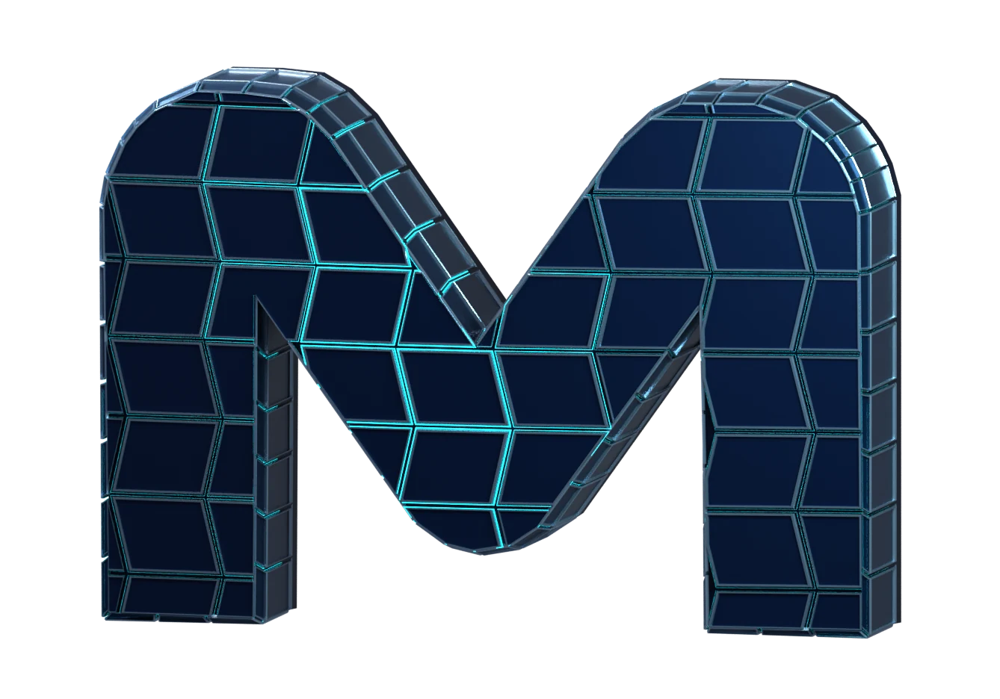

Machined form / living light
A pulse of precision.
Flush titanium. Deep armor. A traveling cyan current.

Move your pointer to gently follow. Tap the form for an expand-and-settle beat.
Machined form / living light
Flush titanium. Deep armor. A traveling cyan current.

Move your pointer to gently follow. Tap the form for an expand-and-settle beat.